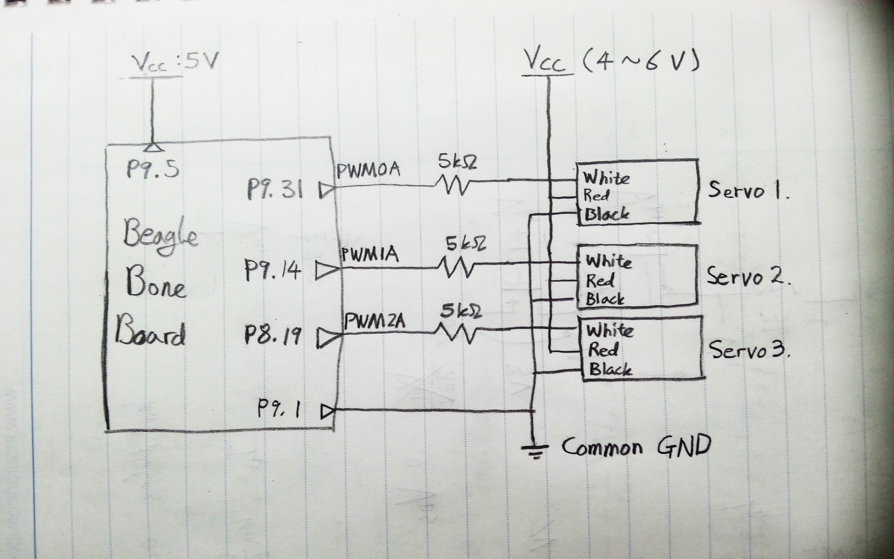
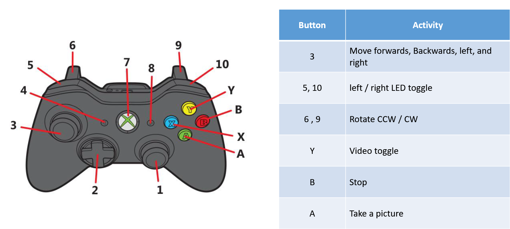

Alan Wootae Song
Exploration Robot
View source code on GitHubKey Words
BeagleBone, Linux, C, C++, Multithreaded Programming, Socket Programming, UDP, SDL2, Python, Makefile, Shell script, TMR, PWM, real time
What is Exploration Robot?
Exploration Robot is a robot that goes to extreme environments that human cannot go to like places exposed to radiation and too small for people. It then gathers information such as video (real-time), temperature, and light intensity, of the area and send it to the base station.

Exploration Robot consists of BeagleBone (runs Ubuntu), Logitech C110 camera, photoresistor, temperature sensor, Wi-Fi dongle, 3 servos, 3 omni wheels, 2 Li-Po Batteries, and DC/DC Converter.
The robot is connected to base station via Wi-Fi and is controlled by a wireless Xbox controller.
The robot’s camera sends the video in real time to the base station, which displays the video on a SDL window. You can also save an image by pressing A button on the Xbox controller.
Information such as temperature and light intensity is shown in base station’s terminal.
Layout

commander3.cpp (2 threads): Deals with external commands (Xbox controller), send commands to the robot via UDP, receives images from the robot and displays them in real time, and displays sensor information.
Send_UDPs.c: Send images to the base station via UDP every 1 second.
Capture2.c: Captures images
Control_TMR_Bone.c: Receives commands from base station via UDP and controls the robot’s movement accordingly.
Details
Servos
The servos are controlled via PWM signals generated by the BeagleBone. Each servo’s dead band was measured and recorded as below:

Controlled by:
- Control_TMR_Bone.c
Wi-Fi
A Wi-Fi dongle is connected to the BeagleBone’s USB slot. Then, WPA is setup for the security. After configuring the interface file, the WiFi-driver is manually started.
The base station and the robot communicate via UDP/IP.
The system uses two different ports for the communication: one for controlling servo and one for receiving video and images
Socket programming in C and C++ are used for this purpose.
Used in:
- commander3.cpp
- Send_UDPs.c
- Control_TMR_Bone.c
Camera
Logitech C110 camera is connected to the BeagleBone’s usb slot. The robot shoots video and send it in real time via UDP/IP to the base station in real time. The video is then shown on base station’s SDL window.
Xbox Controller
The Xbox controller is connected to the base station. When a button is pressed, commander3.cpp sends an appropriate command to the BeagleBone (handled by SDL_Event).
Language/Software used
- C
- C++
- Python
- SDL2
- Linux
- Makefile
- Shell script
- Multithreaded Programming
- Socket Programming
Hardware used
- BeagleBone
- Temperature sensor
- Photo cell
- DC/DC Converter
- Logitech C110 camera
- Servos
- Xbox controller
<KAIST EE405 Electronic Design Lab>
<Spring 2016>
<Coded by Alan Wootae Song>